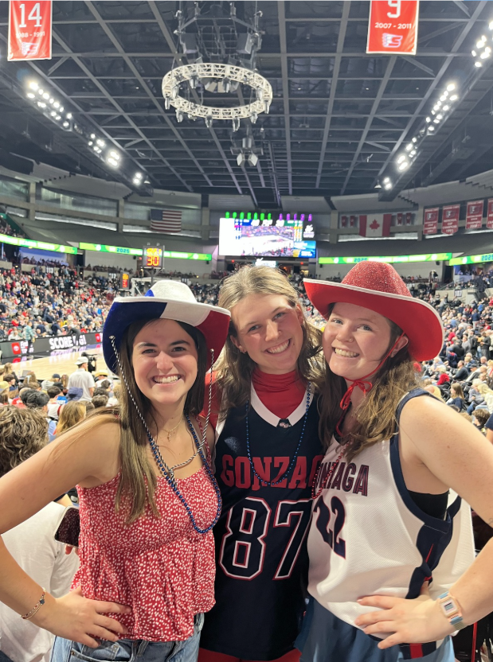
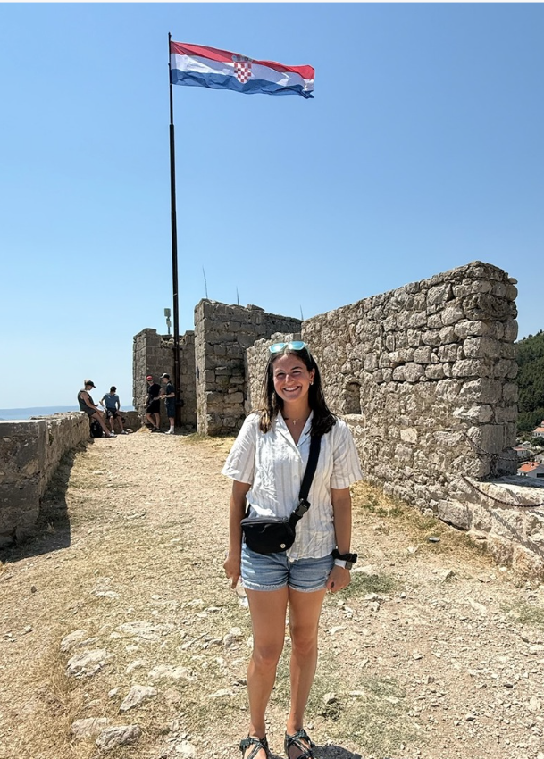

Isabelle May
Computer Science | Gonzaga University | Class of 2026
Interests & Hobbies
-
Cheering on the Zags – learn more about GU basketball by clicking on the image!

-
Anything outdoors – hiking, camping, backpacking, climbing, etc.
Here's a pic of my dog Charlie on a hike with me!

-
Skiing in the winter – especially enjoying fresh powder on the slopes.

-
Traveling and exploring different cultures. Here's a pic from my summer travels in Europe!
